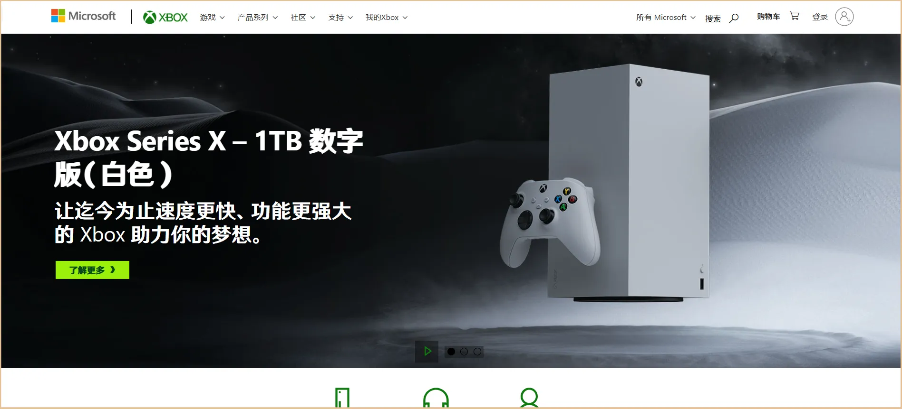
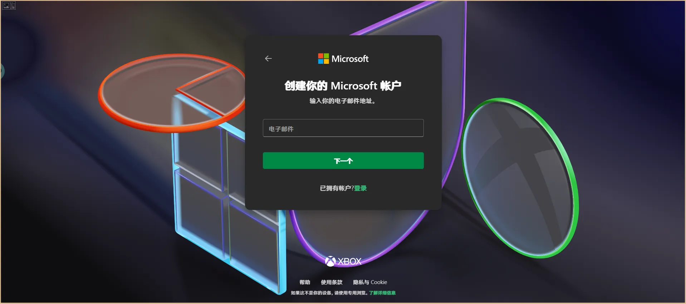
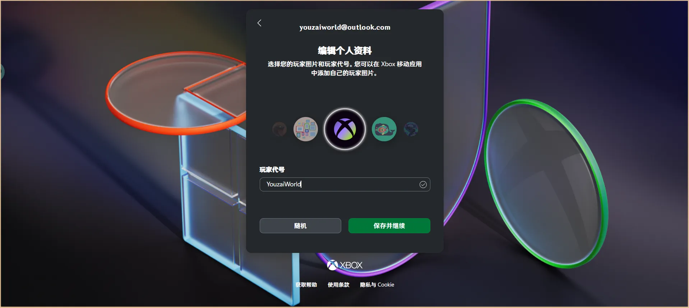
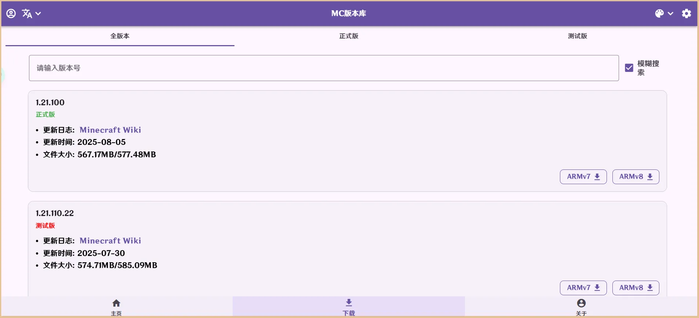
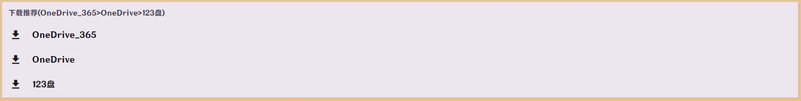
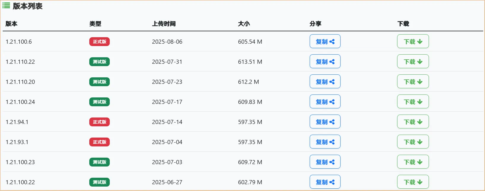
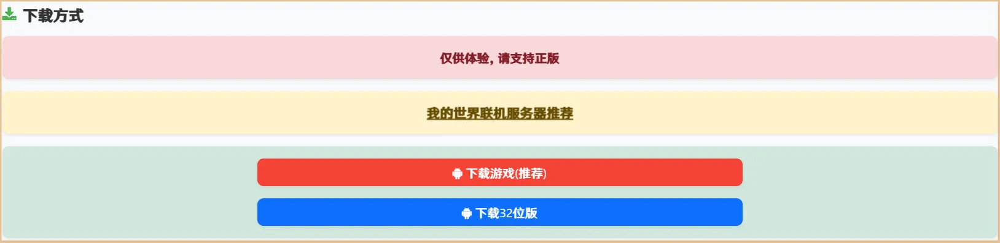
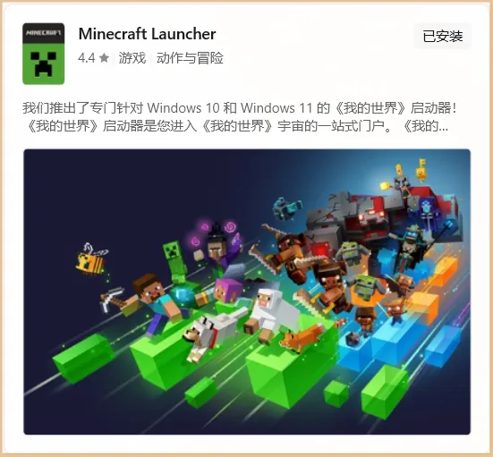

欢迎来到悠哉世界！本指南将帮助您加入服务器。
如果您已经拥有过国际版我的世界游玩经历，可以直接点击目录的2 进入服务器章节跳转，本教程适用于第一次接触国际版我的世界的玩家！
本文档最后修改于 2025-11-23 12:58 。
1 获取客户端
了解如何注册国际版账号和获取游戏客户端！
1.1 注册账号
- 访问 Xbox 官网
- 点击右上角的登录按钮 
- 如果您拥有 Microsoft 账号，您可以直接登录。如果没有，请点击创建账户按钮
- 同意个人数据导出许可
- 输入一个您喜爱的邮件地址，格式为 example@outlook.com （@前面部分可以是任意内容，后面必须为 outlook.com ） 
- 设置一个密码
- 设置国家/地区和出生日期（请注意，您必须年满 18 岁才能正常使用，否则会受到限制）
- 添加姓名，取消勾选我希望接收有关 Microsoft 产品和服务的信息、提示和优惠通知
- 通过人机验证
- 暂时跳过使用人脸、指纹或 PIN 更快地登录
- 如果您要修改玩家代号，点击头像旁边的笔按钮进行编辑，之后点击保存并继续，之后，您还可以免费更改一次 
- 点击现在就开始吧
- 回到 Xbox 官网，点击右上角的头像，点击小弹窗下面的三个点，点击 Xbox 设置
- 在左侧菜单中点击隐私和在线安全，在隐私菜单里面选择适合你的隐私设置，然后点击最下面的提交，回到页面顶端，点击消息安全菜单，把所有内容的设置改成未筛选（否则您与好友发送消息时将会受到限制），完成。

演示注册过程，如果您已经拥有 Microsoft 账号，请跳过到第 10 步。
这样，您就完成了 Xbox 账号的注册和设置。
1.2 下载游戏
Android 版
要下载正版游戏，您需要拥有特殊网络环境并访问 Google Play 商店，在里面花费 US$6.99 来购买并下载。
点击此处访问 Google Play 商店购买 Minecraft 页。
对于中国大陆用户，您可以前往MC 版本库或苦力怕论坛下载符合服务器版本的正式版 Minecraft
的 APK 安装包。
从 MC 版本库下载（最推荐）
- 访问MC 版本库
- 选择符合服务器版本的正式版点击右侧的 ARMv8 按钮 
- 弹窗里选择一条适合您的下载线路（建议选择 OneDrive 路线），点击进入网盘下载 
从苦力怕论坛下载
- 访问苦力怕论坛
- 选择符合服务器版本的正式版，点击右侧的下载按钮 
- 在打开的新页面中，往下滚动网页，找到下载方式，点击下载游戏（推荐）按钮 
- 弹窗里选择一条适合您的下载线路（建议选择 123 云盘路线），点击选择此条线路，进入网盘下载
Ios 版
您需要切换设备地区到 USA ，拥有特殊网络环境、注册美区 APPLE ID 并访问 App Store，在里面花费 US$6.99 来购买并下载。
点击此处访问 App Store 购买 Minecraft 页。
Windows 版
- 在Minecraft 国际版官网登录您的 Microsoft 账户（可以是刚刚注册的）
- 登录完成，回到官网，点击右上角的立即购买按钮，之后点击 Minecraft > PC/MAC/LINUX > 标准 PC 版，最后点击下方的立即购买来完成购买
- 购买完成后，回到Minecraft 国际版官网，点击右上角的账户 > 下载，点击页面中间偏左的下载 Windows 版即可下载客户端

如提示你所在地区尚未推出或暂时不想购买，请参考 IceLake 的博客。
如您是 Windows 10/11 系统用户，可以点击此处打开 Xbox 的 Minecraft Launcher 应用下载页，点击获取 免费+，弹出的窗点击确定，再点击安装到 你拥有此项 > 启动，弹出的 Xbox 应用窗口点击安装即可。
1.3 安装游戏
Android 版
打开文件管理应用，转到 /storage/emulated/0/Download/ 或 /sdcard/Download/ 目录，找到文件名为 X.X.X.X_v8a.apk （X为版本号）的文件，安装即可。
如安装时出现错误，请参考下表进行排查：
| 错误提示 | 解决方法 |
|---|---|
| 应用未安装 | 请检查您的手机是否开启了允许安装未知来源应用的权限。 |
| 解析时出错 | 请确保您下载的安装包完整无损，建议重新下载。 |
| 签名不一致 | 该问题由于您安装了来自不同渠道的应用导致签名不一致，请卸载之前安装的应用后重试。 |
| 此应用与您的设备不兼容 | 请检查您是否下载了错误的版本，通常在下载时，要下载 ARMv8 版本，而不是
ARMv7 版本。 如果您设备的 Android 版本低于 Android 6.0 则无法安装，请升级您的设备或下载并尝试安装 ARMv7 版本。 |
Ios 版
App store 会自动完成安装，稍后可以在桌面找到游戏。
Windows 版
如您是通过 Xbox 应用安装的 Minecraft Launcher 应用，则可以直接在开始菜单 >
所有应用里找到Minecraft Launcher应用。
如是通过网页下载的安装包，请找到您浏览器的下载目录（一般为%USERPROFILE%\Downloads目录），找到MinecraftInstaller.exe应用程序并以管理员身份运行，按照安装程序指引安装即可。
1.4 登录游戏
Android/Ios 版
- 通过您的桌面/启动器找到 Minecraft 应用并打开
- 当弹出登录窗口的时候，点击现在登录吧后会跳转到浏览器
- 在浏览器中登录刚刚的注册的 Microsoft 账号，登录完成后点击现在就开始吧返回游戏即可
Windows 版
- 在开始菜单 > 所有应用里找到 Minecraft Launcher 应用并打开
- 点击通过MICROSOFT登录，在打开的 Xbox 界面登录刚刚注册的 Microsoft 账号，登录完成后点击现在就开始吧返回游戏
- 点击左侧的 MINECRAFT:BEDROCK EDITION > 安装，等待安装完成，点击开始游戏即可 
2 加入服务器
- 点击游戏 > 服务器 > + 添加服务器
- 服务器名称可以填写任意内容（如悠哉世界），服务器地址填写
mc.youzaiworld.top，端口填写19950,完成后点击添加服务器 - 在左侧列表往上滚动，在其他服务器条目中即可找到刚刚您填写的服务器名称，点击该条目，点击右侧的游戏即可加入
- 如果提示下载资源包，请选择全部下载并加入，否则会出现材质丢失、道具失效的问题

3 服务器基本玩法教程
了解服务器一些功能的用法！
3.1 主菜单
要打开主菜单，您需要使用道具 打开主菜单 或使用命令 /cd 来打开！


各个按钮对应功能描述及命令调用参考下表：
| 按钮名称 | 功能描述 | 调用指令 |
|---|---|---|
| 【MAIN】主城 | 传送到主城所在的位置。 | - |
| 【LAND】领地系统 | 进入领地管理面板。 | /pland |
| 【ORG】公会系统 | 进入玩家公会组织管理面板。 | /orgex gui |
| 【LEVEL】等级 | 查看你的等级，使用属性点增加自身属性。 | /level |
| 【TP】传送系统 | 传送到家、死亡点、其他玩家的位置和随机传送。 | /tps |
| 【DEAL】交易系统 | 进入全服市场。 | /sm |
| 【MONEY】经济系统 | 查看经济、转账和发红包。 | /money |
| 【DUEL】决斗系统 | 与其他玩家进入预设场地进行单挑。 | /duel |
| 【CODE】双码使用系统 | 使用CDK和绑定邀请码。 | - |
| 【SIGN】签到系统 | 每日登录签到领奖励。 | /sign |
| 【INFHS】全服消息与侧边栏显隐状态 | 管理一些信息的接收和侧边栏的显示与隐藏。 | - |
| 【DATA】信息统计 | 统计你在服的历史。 | - |
| 【OP】管理员菜单 | 进入管理员菜单。 | - |
有些功能还有其他快速命令调用，详情请参考该功能的那一章。
提示：因为本教程为快速游玩，故只会带您熟悉常用操作，详细功能请到教程主页查找！
3.2 领地系统
调用指令
| 命令 | 描述 | 备注 |
|---|---|---|
/pland |
打开 GUI | |
/pland <op/deop> <player: target> |
添加或移除目标玩家的领地管理员权限 | 领地主人 |
/pland new [default|sub_land] |
创建领地 default 创建普通领地 sub_land 在当前领地内创建子领地 |
领地主人 |
/pland cancel |
取消领地创建 | 需要先执行 /pland new 命令 |
/pland set <a|b> |
设置领地位置 | 需要先执行 /pland new 命令 |
/pland buy |
购买领地 | 需要先执行 /pland new 命令 |
/pland mgr |
打开领地管理 GUI | 领地管理员 |
/pland set teleport_pos |
设置脚下领地的传送点为当前位置 | 领地主人、管理员 |
/pland list op |
列出领地管理员列表 | |
/pland this |
打开当前位置的领地管理GUI | 领地主人 |
/pland draw <disable|near_land|current_land> |
开启绘制领地范围 | disable 关闭绘制 current_land 绘制当前所在的领地范围 near_land 绘制附近领地范围 |
领地价格计算
- 3D领地
volume * random_num_range(5, 10) - 2D领地
square * 0.5 * height * random_num_range(5, 10)
| 参数名称 | 意思 |
|---|---|
volume |
领地体积（即底面积*高） |
square |
底面积 |
random_num_range(5, 10) |
随机数因子 |
2D领地与3D领地的区别为2D领地拥有这片区域的所有高度（从y轴-64到320），而3D领地则允许您自定义高度范围。
如何创建一个普通领地？
- 在领地系统里点击新建领地
- 选择一个领地类型
- 使用
/pland set a和/pland set b命令设置领地的两个对角点位置（如领地类型选择的为3D领地，则还需要您确认一下高度范围，注意起始高度要低于结束高度） - 使用
/pland buy命令购买领地 - 点击确认购买并支付费用即可
如何创建一个子领地？
- 在一块普通领地内使用
/pland new sub_land命令 - 使用
/pland set a和/pland set b命令设置领地的两个对角点位置，然后确认一下高度范围，注意起始高度要低于结束高度 - 使用
/pland buy命令购买领地 - 点击确认购买（子领地无需支付费用）即可